An Wang
Ph.D., The Chinese University of Hong Kong
Visual Perception · Foundation Models · World Models
Biography
Hi, I am An Wang (王安). I finished my PhD at The Chinese University of Hong Kong in 2026, advised by Prof. Hongliang Ren and Prof. Jiewen Lai. I earned my BEng from Soochow University in 2018 and my MSc from the National University of Singapore in 2019, where I worked with Prof. Chengkuo Lee. I then spent two years as a software engineer in Singapore.
My research has explored efficient and robust approaches to medical image analysis and surgical scene understanding. My recent interests include foundation models and agentic world models for efficient visual perception and interaction.
News
- We released the JING & DAO technical report on agentic video world models, along with Dual Exam, a benchmark for evaluating multimodal agents and world models.
- Successfully passed my Ph.D. thesis defense and became a Dr.! I am grateful to my thesis committee members for their feedback: Prof. Hongsheng Li, Prof. Xiangyu Yue, and Prof. Luping Zhou.
- Endo-TTAP, our work on endoscopic tissue tracking, was accepted by IEEE Transactions on Medical Imaging (IF: 12.4).
- We released SurgMotion, a video-native foundation model for surgical video understanding.
- EndoControlMag, our work on vascular motion magnification in endoscopic video, was accepted by Advanced Engineering Informatics (IF: 11.5).
- VL-SurgPT, our benchmark for vision-language surgical point tracking, was accepted as an oral presentation at AAAI 2026.
- PedSemiSeg, our work on semi-supervised polyp segmentation, was accepted by Computerized Medical Imaging and Graphics (IF: 5.5).
Earlier updates
- ETSM was accepted at ICRA 2025 and PDZSeg at IPCAI 2025. The two papers address dissection trajectory suggestion and dissection zone segmentation, respectively.
- Two papers on vision-guided robotic surgery were accepted at IEEE ROBIO 2024, including our work on web-based augmented reality for neurointerventional planning.
- Our benchmark on endoscopic depth estimation robustness was accepted at the SASHIMI workshop at MICCAI 2024.
- SAM Meets Robotic Surgery was accepted as an oral presentation at the MedAGI workshop at MICCAI 2023.
- Our work on generalizing surgical instrument segmentation to unseen domains was accepted at IROS 2023.
- Our work on Fourier domain adaptation for robust medical image segmentation was accepted by IEEE Transactions on Automation Science and Engineering (IF: 7.9).
- S²ME, our work on scribble-supervised polyp segmentation, received early acceptance at MICCAI 2023.
- Our work on using background images to train surgical instrument segmentation models was accepted at MICCAI 2022.
Publications
Full list ↗* First author · † Corresponding author
World Models & Agent Evaluation
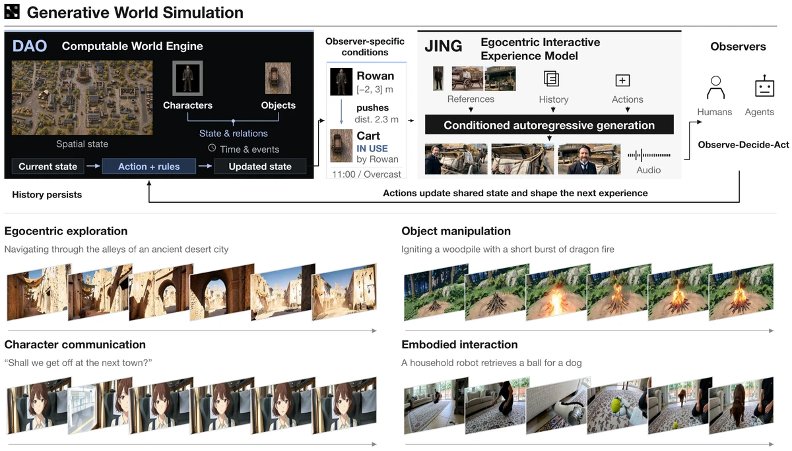
Surgical Vision & Video Understanding
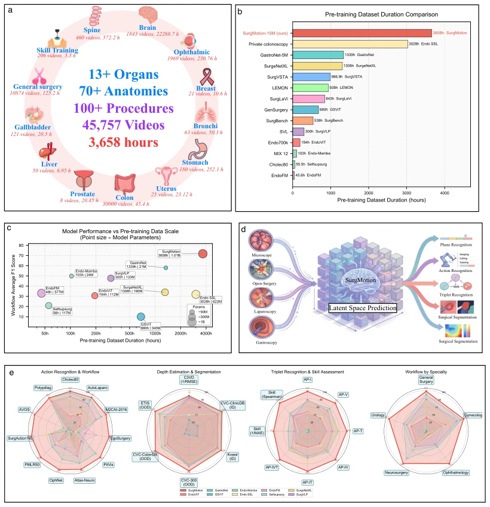
SurgMotion: A Video-Native Foundation Model for Universal Understanding of Surgical Videos
Jinlin Wu, Felix Holm, Chuxi Chen, An Wang, Yaxin Hu, Xiaofan Ye, Zelin Zang, Miao Xu, Lihua Zhou, Huarui Wu, Huai Liao, Danny T. M. Chan, Ming Feng, Wai S. Poon, Hongliang Ren, Dong Yi, Nassir Navab, Gaofeng Meng, Jiebo Luo, Hongbin Liu, Zhen Lei
Preprint, 2026
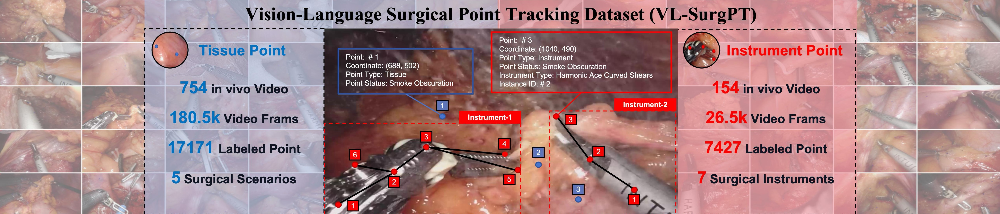
Bridging Vision and Language for Robust Context-Aware Surgical Point Tracking: The VL-SurgPT Dataset and Benchmark
Rulin Zhou*, Wenlong He*, An Wang*, Jianhang Zhang, Xuanhui Zeng, Xi Zhang, Chaowei Zhu, Haijun Hu†, Hongliang Ren†
The Fortieth AAAI Conference on Artificial Intelligence (AAAI-26) (Oral)
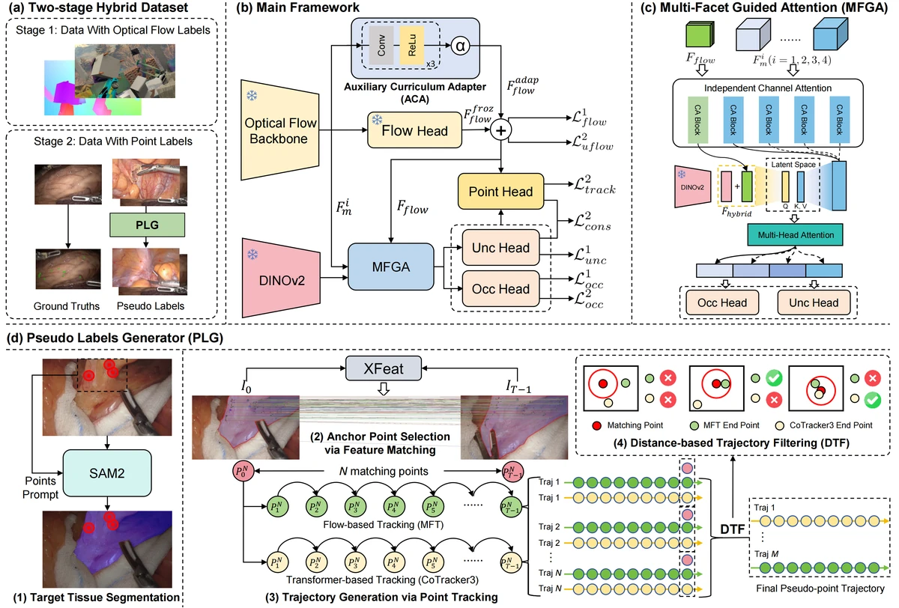
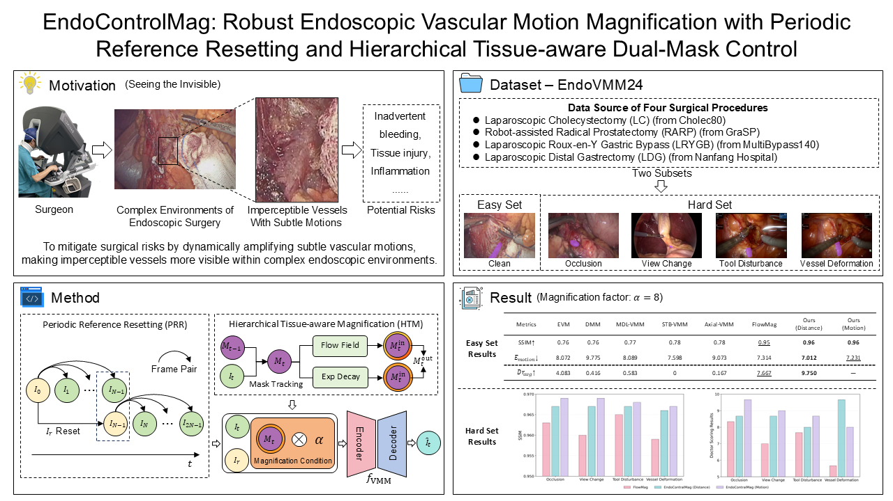
EndoControlMag: Robust Endoscopic Vascular Motion Magnification with Periodic Reference Resetting and Hierarchical Tissue-aware Dual-Mask Control
An Wang*, Rulin Zhou*, Mengya Xu*, Yiru Ye, Longfei Gou, Yiting Chang, Hao Chen, Chwee Ming Lim, Jiankun Wang, Hongliang Ren†
Advanced Engineering Informatics (AdvEI) 2026
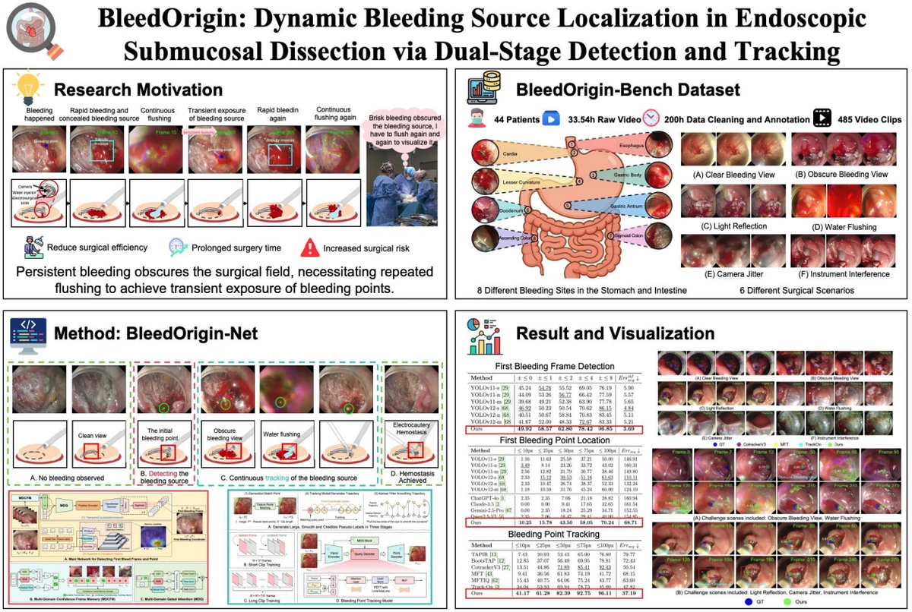
Medical Image Segmentation
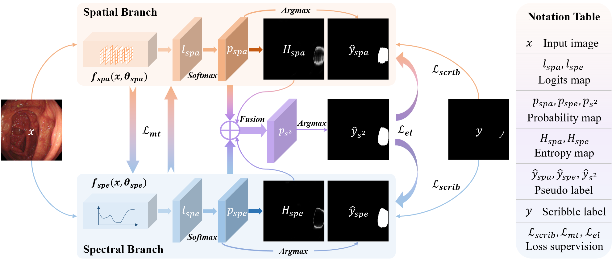
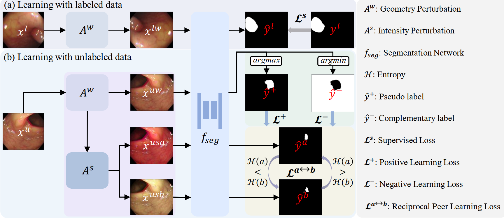
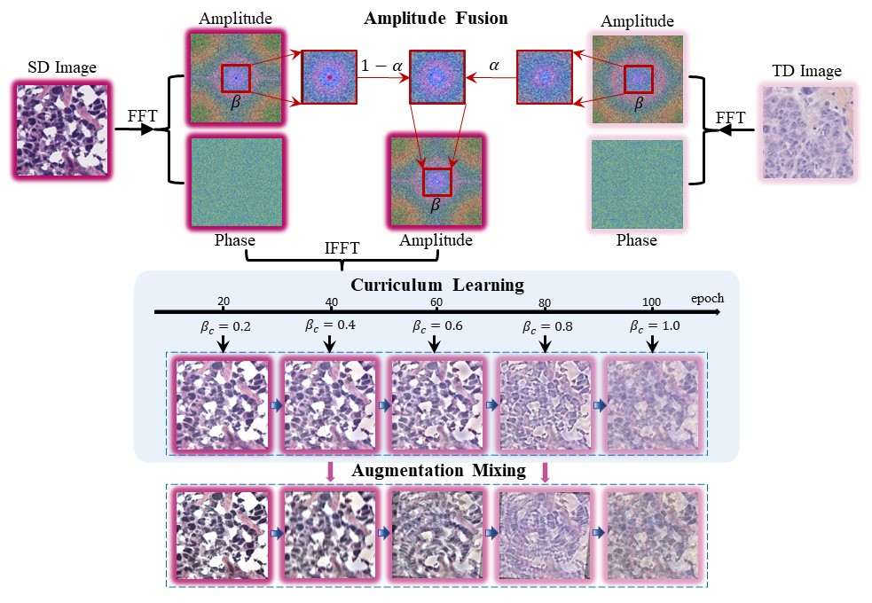
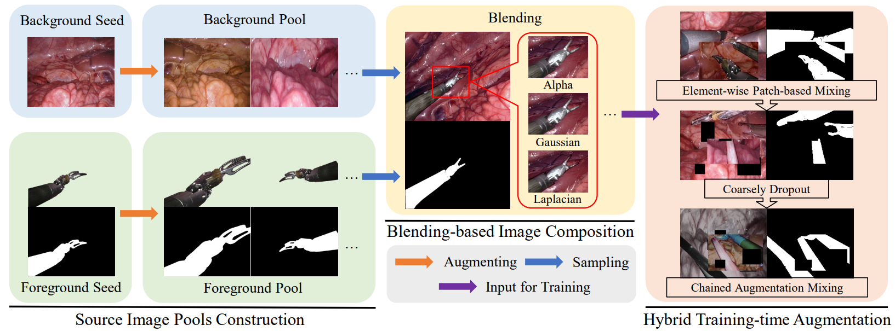
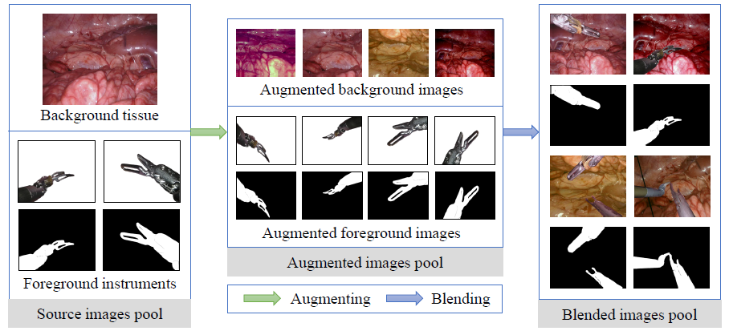
Experience
Centre for Artificial Intelligence and Robotics (CAIR), Chinese Academy of Sciences
Foundation Model Algorithm Intern · Hong Kong SAR, China · Nov 2025 – Feb 2026
Contributed to:
Continental Automotive
Software Engineer · Singapore · Aug 2019 – Aug 2021
Developed embedded display drivers.
Education
- 2021.10 - 2026.08, Ph.D., Electronic Engineering, The Chinese University of Hong Kong, Hong Kong SAR, China
- 2018.08 - 2019.06, M.Sc., Electrical Engineering, National University of Singapore, Singapore
- 2014.09 - 2018.06, B.Eng., Information Engineering, Soochow University, Suzhou, China
Miscellaneous
- Honors & Awards: SUSTech Fellowship (2024); Excellent Graduate of Soochow University (2018).
- Teaching: Teaching Assistant at CUHK: Embedded Systems Design (2024.09–2024.12); Intelligent Interactive Robot Practice (2024.01–2024.05); Intelligent Wearable Electronics (2023.01–2023.05); Probability for Engineers (2021.09–2021.12; 2022.09–2022.12; 2023.09–2023.12); Robotic Perception and Intelligence (2022.01–2022.05).